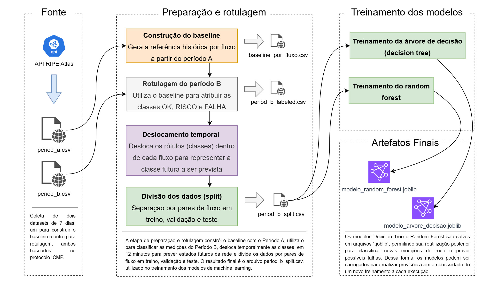

1 Introdução: do ping ao alerta de rede
Todo mundo já sentiu a internet “ficar lenta”. Para quem cuida de uma rede, a pergunta é mais difícil: lenta em relação a quê?
O NetPulse é um sistema de monitoramento e predição de falhas em redes. Ele usa medições reais de ping, coletadas na plataforma RIPE Atlas, e modelos de Machine Learning (Árvore de Decisão e Random Forest) para classificar a condição futura de cada fluxo de rede em OK, RISCO ou FALHA.
Um fluxo é o caminho entre uma probe de origem, que realiza as medições, e um anchor de destino, que é o ponto medido. O ping mede o RTT (round-trip time), o tempo de ida e volta de um pacote, em milissegundos.
O problema de olhar só a latência absoluta
Imagine dois trajetos: ir até a padaria leva 5 minutos e viajar entre duas cidades leva 2 horas. Se o seu alarme dispara sempre que o trajeto passa de 30 minutos, ele vai apitar o tempo todo na viagem longa, onde isso é perfeitamente normal.
Com redes acontece o mesmo. Nos dados do projeto, a latência típica (a mediana) dos 30 fluxos vai de 24,8 ms a 404,4 ms. Um alerta fixo do tipo “RTT acima de 100 ms” ficaria disparado quase o tempo todo no fluxo de 404 ms. Em tese, ele também poderia deixar passar um aumento importante em um fluxo curto, que ainda estivesse abaixo de 100 ms.
Figura 1. O “normal” de cada fluxo é muito diferente
Um exemplo real do Período B: uma medição de 430,6 ms em um fluxo cuja mediana é 404,4 ms está apenas 6,48% acima do normal daquele fluxo. Ela foi classificada como OK, apesar do RTT alto.
Objetivos do projeto
- Coletar e processar medições de rede.
- Preparar e rotular datasets para modelagem.
- Treinar e avaliar modelos de Árvore de Decisão e Random Forest.
- Classificar condições futuras dos fluxos em OK, RISCO e FALHA.
Nas próximas seções, vamos ver o problema com mais detalhe, de onde vêm os dados, como o sistema é organizado, como os modelos funcionam e o que os experimentos mostraram, inclusive onde o projeto ainda erra.
2 O problema que queremos resolver
Quatro situações diferentes costumam ser confundidas sob o rótulo “a rede está ruim”. Separá-las é o primeiro passo para criar alertas úteis.
- Latência estrutural
- É o tempo de resposta normal de um fluxo, determinado principalmente pelo caminho e pela distância. No NetPulse, ela é representada pela mediana do baseline. Uma latência alta, mas estável, não é problema.
- Degradação
- É a piora em relação ao normal daquele fluxo: RTT bem acima da mediana, jitter elevado ou perdas. É o que o sistema procura identificar.
- Indisponibilidade
- É a ausência de resposta: pacotes perdidos ou timeouts repetidos. Nos dados, uma medição sem RTT válido é registrada como timeout, nunca como 0 ms.
- Mudança de rota
- Acontece quando o caminho muda e, com ele, a latência normal. O NetPulse não usa a rota como atributo e o baseline é fixo, então uma troca de rota não é acompanhada pelo sistema (veja as limitações).
Os três estados do sistema
OK
Comportamento compatível com o normal do fluxo. Até um pico isolado ainda é OK.
RISCO
Degradação relevante e persistente: sinais de desvio que se repetem nas últimas medições.
FALHA
Desvio extremo, perda elevada ou ausência de resposta.
Como cada estado é definido
As regras são aplicadas em ordem e a primeira verdadeira decide a classe. FALHA vence RISCO, e RISCO vence OK. Nenhuma regra usa país, IP, nome da rota ou um RTT fixo em milissegundos.
| Ordem | Classe | Condição |
|---|---|---|
| 1 | FALHA | Perda de pacotes de 10% ou mais na medição |
| 2 | FALHA | 3 ou mais timeouts nas últimas 5 medições |
| 3 | FALHA | Desvio robusto (z_robusto) de 3,5 ou mais, com RTT presente |
| 4 | FALHA | 2 ou mais das últimas 5 medições com aumento de RTT acima de 80% |
| 5 | RISCO | Na medição atual, pelo menos um destes sinais: z_robusto entre 2 e 3,5; aumento de
RTT entre 30% e 80%; ou jitter relativo de 3 ou mais. E, ao mesmo tempo, 2 ou mais das últimas 5
medições com algum sinal de risco |
| 6 | OK | Nenhuma regra anterior se aplica |
Três exemplos reais
A documentação do projeto traz três medições reais do Período B que mostram como as regras funcionam.
| Classe | Medição | Por que recebeu essa classe |
|---|---|---|
| OK | RTT de 430,6 ms; mediana do fluxo de 404,4 ms; z_robusto 1,76; aumento de 6,48% |
Apesar do RTT alto, o desvio é pequeno para esse fluxo e nenhuma regra de alerta foi satisfeita. |
| RISCO | RTT de 65,6 ms; jitter relativo de 3,60; n5_risco igual a 2 |
O jitter está 3,6 vezes acima do típico e pelo menos duas das últimas cinco medições tinham sinal de risco. |
| FALHA | Sem RTT válido; perda de 100% | A primeira regra de FALHA (perda de 10% ou mais) já foi satisfeita. |
Quem pode usar os alertas?
O cenário de uso envolve a equipe de ADS (análise e desenvolvimento de sistemas), que recebeu o modelo treinado e salvo em formato .joblib para utilizá-lo em um aplicativo. Por meio dessa integração, o aplicativo poderá receber os dados da rede e utilizar o modelo para classificar os fluxos como OK, RISCO ou FALHA. Dessa forma, a equipe de ADS (análise e desenvolvimento de sistemas) poderá apresentar os resultados ao usuário, permitindo identificar situações que exigem atenção e auxiliar na tomada de decisões, como investigar possíveis problemas de conexão ou priorizar a análise de fluxos com maior risco.
3 Origem e tratamento dos dados
De onde vêm as medições
Os dados vêm da API do RIPE Atlas, uma plataforma pública de medições de rede. O grupo avaliou duas opções, um dataset já publicado ou a API do RIPE Atlas, e escolheu a API pelo maior controle sobre a coleta e pela possibilidade de selecionar probes de origens diferentes.
Coleta das medições
Cada medição é um ping ICMP de 3 pacotes, repetido a cada 240 segundos (4 minutos). A coleta cobre duas semanas consecutivas e sem sobreposição:
- Período A (24/09 a 01/10/2026): 75.157 medições, usadas para descobrir o comportamento normal de cada fluxo.
- Período B (01/10 a 08/10/2026): 75.148 medições, usadas para rotular e treinar os modelos.
As distâncias entre probe e anchor foram calculadas pela fórmula de Haversine e classificadas em curta (menos de 1.000 km), média (de 1.000 a 5.000 km) e longa (mais de 5.000 km). Dos 30 fluxos, 21 são longos, 4 médios e 5 curtos.
Figura 2. Duas semanas, dois papéis
Variáveis disponíveis
| Informação | Como aparece |
|---|---|
| Latência | RTT de cada pacote (result) e RTT médio da medição (avg), em ms |
| Perda | Pacotes enviados (sent) e recebidos (rcvd); a perda em % é calculada a
partir deles |
| Disponibilidade | Medição sem RTT válido (avg igual a -1) é tratada como timeout; no baseline, a
proporção de respostas de cada fluxo é registrada |
| Jitter | Não vem pronto da API: é calculado como a média das diferenças absolutas entre RTTs consecutivos da própria medição |
Limpeza e tratamento
- Medições sem RTT válido representam 0,12% do Período A e 0,07% do Período B. Elas nunca são gravadas como 0 ms: ficam fora da mediana e da variação do baseline, mas permanecem no dataset como eventos de timeout.
- Um fluxo só recebe baseline se tiver pelo menos 1.500 RTTs válidos no Período A. Os 30 fluxos atenderam ao critério (entre 2.430 e 2.518 RTTs válidos por fluxo), e nenhum foi excluído.
- Os dados brutos ficam em
data/rawe não são alterados; os arquivos de trabalho ficam emdata/interim.
O baseline: o “normal” de cada fluxo
Para cada fluxo, o Período A gera uma ficha com cinco números:
- Mediana do RTT: a latência típica do fluxo.
- MAD (desvio absoluto mediano): o quanto o RTT costuma variar, de um jeito pouco sensível a picos. O baseline também guarda o IQR, outra medida de variação.
- Jitter típico: a variação habitual entre pacotes.
- Perda típica: 0% em todos os 30 fluxos.
- Proporção de resposta: o quanto o fluxo costuma responder.
Figura 3. Mediana de RTT de cada um dos 30 fluxos (Período A)
Engenharia de atributos
Para cada medição do Período B, o sistema compara o valor atual com a ficha do fluxo e com as últimas medições dele. Os nove atributos usados pelos modelos são todos relativos ao comportamento normal ou à história recente do fluxo:
| Atributo | O que significa |
|---|---|
perda_pct |
Percentual de pacotes sem resposta na medição |
aumento_pct |
Quanto o RTT atual está acima ou abaixo da mediana do fluxo, em % |
z_robusto |
Distância do RTT atual à mediana, em unidades da variação normal do fluxo: (RTT − mediana) ÷ (1,4826 × MAD) |
jitter_atual |
Jitter da medição atual, em ms |
jitter_relativo |
Jitter atual dividido pelo jitter típico do fluxo |
timeout_atual |
1 se não houve RTT válido (ou a perda foi de 100%), senão 0 |
n5_timeout |
Quantidade de timeouts nas últimas 5 medições do fluxo |
n5_aumento80 |
Quantas das últimas 5 medições tiveram aumento de RTT acima de 80% |
n5_risco |
Quantas das últimas 5 medições atendem a pelo menos um critério de risco |
País, endereço IP, identificadores de fluxo e o RTT absoluto ficam fora dos atributos, para que o modelo não aprenda apenas que “fluxo longo tem latência alta”.
Separação entre baseline e dataset de treino
- O Período A gera o baseline e é congelado.
- As medições do Período B recebem as métricas relativas e um rótulo (OK, RISCO ou FALHA) pelas regras da Tabela 1.
- O rótulo é deslocado 12 minutos: o alvo de cada medição é a classe da primeira medição do mesmo fluxo que ocorre 12 minutos ou mais depois. Medições sem uma medição futura correspondente são removidas. Esse deslocamento é o que transforma o problema em previsão. Antes dele, o modelo via a própria classe e a acurácia chegava a 100%, o que invalidava a avaliação.
- Os fluxos são divididos em 20 para treino, 5 para validação e 5 para teste, sorteados com semente 42 e distribuídos de forma proporcional às categorias de distância. Cada fluxo pertence a um único conjunto, o que reduz o risco de vazamento de dados.
Figura 4. Distribuição das classes-alvo em cada conjunto
4 Como funciona o sistema
O NetPulse é um pipeline: uma sequência de etapas em que a saída de uma é a entrada da próxima. Para explicá-lo, organizamos as etapas do repositório em três camadas.
Camada 1: Coleta e engenharia
Scripts em Python consultam a API do RIPE Atlas, guardam as respostas em cache e geram
period_a.csv, period_b.csv e os metadados dos pares probe e anchor, com a
classificação de distância.
Camada 2: Baseline e atributos
O Período A gera o baseline de cada fluxo. O Período B recebe as métricas relativas e os rótulos, o rótulo é deslocado 12 minutos e os fluxos são divididos em treino, validação e teste.
Camada 3: Modelagem
A Árvore de Decisão e o Random Forest são treinados com busca de hiperparâmetros, avaliados no teste e
salvos em arquivos .joblib, com metadados em JSON.
Figura 5. Do ping à classe prevista
Ver o diagrama original do repositório

O repositório tem três orquestradores (etl_data_collection.py,
etl_data_labeling.py e etl_data_model.py), chamados em sequência pelo
main.py. Depois do treino, os modelos salvos podem ser carregados para classificar novas
medições sem treinar de novo.
5 Os modelos de Machine Learning
Um modelo de classificação aprende com exemplos que já têm a resposta. Aqui, cada exemplo é uma medição de rede (os nove atributos da Tabela 4), e a resposta é a classe 12 minutos depois: OK, RISCO ou FALHA. Depois de treinado, o modelo recebe uma medição nova e prevê a classe.
Três abordagens aparecem no artigo. A primeira é uma regra de referência, calculada para comparação, e as outras duas são os modelos treinados pelo projeto.
Baseline de comparação: repetir a classe atual
Cálculo feito a partir do period_b_split.csv, no conjunto de teste; não é
um modelo treinado.
- Conceito
- Uma previsão “sem inteligência”: se o fluxo está em RISCO agora, prevê RISCO daqui a 12 minutos.
- Como funciona
- Compara a classe atual de cada medição com a classe futura real. Não aprende nada nem usa os atributos.
- Exemplo simples
- Se um fluxo está em OK agora, a regra prevê OK. Ela só erra quando o estado muda dentro dos 12 minutos.
- Vantagens
- É simples e dispensa treinamento. Serve de régua: um modelo só vale a pena se superar, ou complementar, essa regra.
- Limitações
- Por definição, nunca antecipa uma mudança de estado, e precisa que a classe atual já tenha sido calculada pelas regras de rotulagem.
- Aplicação no NetPulse
- Ponto de comparação nos resultados (Seção 6).
Árvore de Decisão
- Conceito
- Um conjunto de perguntas de “sim ou não” encadeadas, como um fluxograma. Cada pergunta usa um atributo e um limite, e cada caminho termina em uma classe.
- Como funciona
- No treino, o algoritmo testa muitos atributos e limites e escolhe, a cada passo, a pergunta que melhor separa as classes (critério de Gini). Para prever, a medição percorre as perguntas até uma folha.
- Exemplo simples
- Se o RTT está muito acima do normal e o jitter também, a árvore pode prever FALHA, como na Figura 7.
- Vantagens
- É fácil de interpretar e de explicar, e mostra quais atributos mais pesaram na decisão.
- Limitações
- Uma árvore sozinha pode ser instável: pequenas mudanças nos dados podem gerar uma árvore diferente. Pode também decorar o treino se ficar profunda demais.
- Aplicação no NetPulse
- Treinada com os nove atributos, com profundidade máxima 5, pelo menos 100 amostras por folha e pesos balanceados entre as classes, para dar mais atenção às classes raras. Na validação, obteve F1 macro de 0,539.
Random Forest
- Conceito
- Uma “floresta” de muitas árvores de decisão, cada uma treinada de um jeito um pouco diferente. A previsão final é a classe mais votada entre elas.
- Como funciona
- Cada árvore é treinada com uma amostra diferente dos dados e, a cada pergunta, só considera um subconjunto dos atributos. Como as árvores erram em lugares diferentes, a votação costuma ser mais estável do que uma árvore sozinha.
- Exemplo simples
- Se duas de três árvores preveem FALHA e uma prevê RISCO, a floresta prevê FALHA, como na Figura 8.
- Vantagens
- Em geral generaliza melhor que uma árvore única, e também indica a importância dos atributos.
- Limitações
- É mais difícil de interpretar, porque são centenas de árvores, e mais lenta para treinar e usar.
- Aplicação no NetPulse
- Treinada com os mesmos nove atributos, com 200 árvores, folhas de pelo menos 5 amostras e pesos balanceados dentro de cada amostra. Na validação, obteve F1 macro de 0,544.
Como os hiperparâmetros foram escolhidos
Hiperparâmetros são as “regulagens” do algoritmo, definidas antes do treino. O projeto testou combinações em uma busca em grade (grid search) e escolheu a melhor pelo F1 macro na validação, sem olhar o teste: foram 30 combinações para a Árvore de Decisão e 24 para o Random Forest. A semente aleatória foi 42 nos dois casos.
6 Resultados e comparação dos modelos
Todos os resultados abaixo vêm do conjunto de teste: 12.518 medições de 5 fluxos que o modelo não viu durante o treino (8.152 OK, 653 RISCO e 3.713 FALHA). Os valores dos modelos seguem o README do projeto, e a regra de referência e a balanced accuracy foram calculadas a partir dos dados e das matrizes de confusão do repositório.
As métricas, em linguagem simples
- Acurácia
- De todas as previsões, que fração estava certa. Pode enganar quando uma classe domina: prever sempre OK já acertaria cerca de 65% do teste.
- Precisão
- Quando o modelo diz “FALHA”, quantas vezes ele acerta. Mede falsos alarmes.
- Recall
- De todas as FALHAs reais, quantas o modelo encontrou. Mede alarmes perdidos.
- F1
- Combina precisão e recall em um número. O F1 macro é a média dos F1 das três classes, todas com o mesmo peso, então a classe rara RISCO pesa tanto quanto OK.
- Balanced accuracy
- A média dos recalls das três classes. Também trata as classes com o mesmo peso. Neste artigo ela foi derivada das matrizes de confusão.
- Matriz de confusão
- Uma tabela que cruza a classe real (linhas) com a prevista (colunas). A diagonal são os acertos, e o resto mostra quais classes o modelo confunde.
Comparação geral
| Métrica | Repetir classe atual | Árvore de Decisão | Random Forest |
|---|---|---|---|
| Acurácia | 85,16% | 72,04% | 82,72% |
| F1 macro | 0,642 | 0,555 | 0,630 |
| Balanced accuracy | 64,27% | 58,15% | 62,99% |
| Recall de FALHA | 88,10% | 48,67% | 75,73% |
| Recall de RISCO | 15,31% | 40,58% | 22,51% |
Figura 9. Métricas principais lado a lado
O que acontece em cada classe
| Classe | Precisão | Recall | F1 | ||||||
|---|---|---|---|---|---|---|---|---|---|
| Ref. | Árvore | RF | Ref. | Árvore | RF | Ref. | Árvore | RF | |
| OK | 0,898 | 0,915 | 0,906 | 0,894 | 0,852 | 0,907 | 0,896 | 0,883 | 0,907 |
| RISCO | 0,146 | 0,090 | 0,112 | 0,153 | 0,406 | 0,225 | 0,150 | 0,147 | 0,149 |
| FALHA | 0,879 | 0,915 | 0,925 | 0,881 | 0,487 | 0,757 | 0,880 | 0,635 | 0,833 |
Ref. = regra de repetir a classe atual; RF = Random Forest.
Figura 10. Matrizes de confusão no teste
O que os resultados significam
- Random Forest contra Árvore de Decisão. O Random Forest teve F1 macro 0,075 maior (0,630 contra 0,555), acurácia 10,7 pontos percentuais maior e recall de FALHA 27,1 pontos maior. Ele encontra muito mais falhas reais, com precisão semelhante.
- O papel da Árvore. A Árvore de Decisão é a melhor em recall de RISCO (40,6% contra 22,5%), à custa de mais falsos alarmes: sua precisão em RISCO é de apenas 9,0%.
- A referência é exigente. Estados de rede tendem a persistir, então a classe atual já acerta o estado de 12 minutos depois em 85,2% dos casos. Nessa régua, o Random Forest chega perto (F1 macro 0,630 contra 0,642), mas fica abaixo em acurácia e em recall de FALHA. Ele supera a referência no recall de RISCO (22,5% contra 15,3%), no recall e no F1 de OK e na precisão de FALHA.
- RISCO é a classe difícil. Nenhuma abordagem passa de 15% de precisão em RISCO, e o F1 dessa classe fica perto de 0,15 nas três.
Os tempos de treinamento e de predição do modelo final não estão registrados no repositório, por isso não são apresentados.
7 Destaque: o melhor modelo de Machine Learning
Melhor modelo treinado no experimento
Random Forest
Entre os dois modelos de Machine Learning treinados pelo projeto, o Random Forest teve o melhor desempenho no teste em acurácia, F1 macro, balanced accuracy e recall de FALHA.
- F1 macro
- 0,630
- Árvore: 0,555
- Acurácia
- 82,72%
- Árvore: 72,04%
- Balanced accuracy
- 62,99%
- Árvore: 58,15%
- Recall de FALHA
- 75,73%
- Árvore: 48,67%
Por que ele superou a Árvore de Decisão
Os números mostram onde a vantagem aparece: das 3.713 FALHAs reais do teste, o Random Forest acertou 2.812 e a Árvore de Decisão, 1.807. A Árvore errou principalmente ao prever RISCO para falhas reais (1.624 casos), um erro que o Random Forest cometeu em 588 casos.
O experimento não isolou o motivo, mas há uma explicação plausível e conhecida: ao combinar a votação de 200 árvores, que erram em lugares diferentes, o Random Forest tende a ser mais estável do que uma árvore única de profundidade 5. Na validação a diferença foi pequena (F1 macro de 0,544 contra 0,539), e foi no teste que ela apareceu com clareza.
Como ele funciona, em poucas palavras
O Random Forest do NetPulse é uma votação de 200 árvores de decisão. Cada árvore olha para uma amostra diferente das medições e, em cada pergunta, considera apenas 3 dos 9 atributos, sorteados. A classe prevista é a mais votada.
Hiperparâmetros utilizados
| Hiperparâmetro | Valor escolhido | Opções testadas | Papel geral |
|---|---|---|---|
n_estimators |
200 | 100 e 200 | Número de árvores. Mais árvores deixam a votação mais estável, com ganhos cada vez menores e mais custo de processamento. |
max_depth |
sem limite | 6, 12 e sem limite | Profundidade máxima de cada árvore. Árvores mais profundas captam padrões mais complexos, mas podem decorar o treino. |
min_samples_leaf |
5 | 5 e 50 | Mínimo de amostras em cada folha. Valores maiores geram árvores mais simples e suaves. |
max_features |
raiz quadrada (3 dos 9 atributos) | apenas raiz quadrada | Quantos atributos cada pergunta pode considerar. Limitar esse número faz as árvores serem diferentes entre si. |
class_weight |
balanced_subsample | nenhum e balanced_subsample | Dá mais peso às classes raras (RISCO e FALHA) em cada amostra de treino. |
A semente aleatória foi 42 e o critério de seleção foi o F1 macro na validação. A coluna “Papel geral” descreve a função de cada hiperparâmetro. O experimento não mediu o efeito isolado de cada um.
O que mais pesou nas decisões
Figura 11. Importância dos atributos
z_robusto, que mede o desvio em relação ao normal do fluxo, lidera nos dois modelos. Os
atributos de perda e de timeout têm importância próxima de zero.
Esse resultado é coerente com a forma como os rótulos foram criados: 98,6% das FALHAs do Período B (10.817
de 10.976) foram rotuladas pela regra do z_robusto de 3,5 ou mais. Já as regras de perda e de
timeout originaram poucos casos (147 e 6).
Onde ele ainda erra
- RISCO. O recall de RISCO é de 22,5% e a precisão, de 11,2%: dos 653 RISCOs reais, 147 foram acertados e 453 foram previstos como OK.
- FALHA prevista como RISCO ou OK. 588 FALHAs foram previstas como RISCO e 313 como OK, entre as 3.713 do teste.
- Falsos alarmes de RISCO. 581 medições OK foram previstas como RISCO.
8 Como utilizar a API
Finalidade
O pipeline consulta a API do RIPE Atlas para obter informações sobre os destinos (anchors), as origens (probes), as medições e os resultados dos pings. As requisições do projeto são públicas: o código não envia chave de API.
Endpoints utilizados
O endereço base é https://atlas.ripe.net/api/v2, e todas as chamadas usam o método HTTP
GET.
| Método | Endpoint | Para que serve no projeto |
|---|---|---|
| GET | /anchors/{anchor_id}/ |
Metadados do anchor de destino, como localização. |
| GET | /probes/{probe_id}/ |
Metadados da probe de origem. |
| GET | /measurements/{measurement_id}/ |
Metadados da medição. |
| GET | /measurements/{measurement_id}/results/ |
Resultados dos pings, com os parâmetros start, stop e
probe_ids.
|
Exemplo de requisição
Este exemplo segue o código de coleta do projeto e usa identificadores reais: a medição 11863561, cujo destino é o anchor 1227, e a probe 6251. As datas são aproximadas e delimitam o Período A.
import requests
url = "https://atlas.ripe.net/api/v2/measurements/11863561/results/"
params = {
"start": "2026-09-24T00:37:00", # início do Período A (aproximado)
"stop": "2026-10-01T00:37:00", # fim do Período A (aproximado)
"probe_ids": 6251,
}
resposta = requests.get(url, params=params)
resposta.raise_for_status()
resultados = resposta.json()Exemplo de resposta
O exemplo abaixo é a primeira linha do period_a.csv, que traz esse resultado já organizado, com os campos de endereço IP omitidos.
anchor_id : 1227
probe_id : 6251
msm_id : 11863561
ttl : 50.0
result : [{'rtt': 64.985744}, {'rtt': 65.258971}, {'rtt': 65.274425}]
dup : 0
rcvd : 3
sent : 3
min : 64.985744
max : 65.274425
avg : 65.17304666666666
timestamp : 1790210398
type : ping
packets : 3
interval : 240Campos retornados
| Campo | Significado |
|---|---|
result |
RTT de cada pacote da medição, em ms. |
sent e rcvd |
Pacotes enviados e recebidos. |
min, max e avg |
Menor, maior e média dos RTTs, em ms. O valor -1 indica que não houve RTT válido. |
timestamp |
Instante do resultado, em Unix timestamp. |
ttl e dup |
Time to Live informado e respostas duplicadas. |
type, packets e interval |
Tipo da medição (ping), pacotes por medição (3) e intervalo entre medições (240 s). |
msm_id, probe_id e anchor_id |
Identificam a medição, a probe de origem e o anchor de destino, ou seja, o fluxo. |
Reutilizando os modelos treinados
Depois do treino, cada modelo é salvo em um arquivo .joblib, acompanhado de um arquivo JSON de
metadados. Os arquivos .joblib não ficam versionados no repositório; segundo a equipe, eles
foram repassados a outra equipe para a construção de um aplicativo. Os metadados em JSON documentam o
contrato do modelo:
- Entrada: os nove atributos da Tabela 4, calculados antes de chamar o modelo, com a medição atual, as últimas cinco medições do fluxo e o baseline.
- Saída: a classe prevista para o estado do fluxo 12 minutos adiante: OK, RISCO ou FALHA.
{
"entrada": {
"perda_pct": 0.0,
"aumento_pct": -0.8133,
"z_robusto": -2.2003,
"jitter_atual": 0.0805,
"jitter_relativo": 0.5089,
"timeout_atual": 0,
"n5_timeout": 0,
"n5_aumento80": 0,
"n5_risco": 0
},
"saida_prevista": "OK"
}O arquivo .joblib guarda um dicionário com o modelo treinado (chave modelo) e a
lista de atributos (chave features). Um uso típico em Python seria:
import joblib
import pandas as pd
pacote = joblib.load("modelo_random_forest.joblib")
modelo = pacote["modelo"]
medicao = pd.DataFrame([{
"perda_pct": 0.0, "aumento_pct": -0.8133, "z_robusto": -2.2003,
"jitter_atual": 0.0805, "jitter_relativo": 0.5089, "timeout_atual": 0,
"n5_timeout": 0, "n5_aumento80": 0, "n5_risco": 0,
}], columns=pacote["features"])
print(modelo.predict(medicao)[0])9 Limitações e próximos passos
Resultados só são úteis quando vêm acompanhados de seus limites. Estas são as limitações reais do NetPulse.
Rótulos heurísticos
As classes vêm de regras com limiares fixos, e não de chamados ou incidentes reais. Por isso os modelos
aprendem a política de rotulagem. Quase todas as FALHAs (98,6%) vieram da regra do
z_robusto.
Representatividade das medições
São 30 fluxos, 7 anchors e 22 probes, e 21 dos fluxos são de distância longa. Os anchors não representam a rede de um campus. O teste usa apenas 5 fluxos, e um deles concentra 2.115 das 3.713 FALHAs do teste (57%).
Jitter e perda
Cada medição tem só 3 pacotes, o que torna o jitter uma estimativa pobre. A perda típica é zero em todos os fluxos, e só 0,07% das medições do Período B ficaram sem RTT válido.
Baseline fixo
O baseline é calculado uma vez, no Período A, e permanece congelado. Ele não acompanha uma troca de rota nem uma mudança gradual no comportamento normal do fluxo.
Período de coleta
Foram duas semanas consecutivas: uma para o baseline e outra para rotular e treinar. Padrões que aparecem só em períodos mais longos não foram avaliados.
Horizonte de previsão
O horizonte é de 12 minutos. Outros horizontes não foram testados, e o resultado deve ser lido apenas para esse alvo.
Desbalanceamento das classes
No conjunto completo, 77,7% das medições são OK, 14,6% são FALHA e 7,7% são RISCO. Como a divisão é por fluxo, a proporção muda entre os conjuntos: o teste tem 29,7% de FALHA, contra 11,8% no treino.
A classe RISCO
Os dois modelos têm dificuldade com RISCO, que é a classe mais rara. A precisão fica entre 9% e 11% nos dois modelos, ou seja, a maior parte dos alertas de RISCO é falso alarme.
Um aprendizado do processo também merece registro: antes de o rótulo ser deslocado 12 minutos, a acurácia chegava a 100%, porque o modelo apenas “lia” a própria classe. A correção tornou a avaliação mais realista e derrubou os números, como mostra a Seção 6.
Possibilidades de evolução
As ideias abaixo são caminhos de trabalho futuro. Nenhuma delas foi implementada.
- Investigar estratégias para melhorar a classificação de RISCO.
- Explorar novos atributos e técnicas de engenharia de dados.
- Avaliar outros algoritmos e outras estratégias de ajuste de hiperparâmetros.
- Ampliar os testes com dados de diferentes períodos e fluxos de rede.
10 Conclusão
O NetPulse nasceu de uma pergunta simples: como saber se uma latência é alta para aquele fluxo? A resposta do projeto foi construir, para cada um dos 30 fluxos, um baseline com uma semana de medições do RIPE Atlas e medir cada nova medição contra ele. Com essas métricas relativas, treinamos modelos para classificar a condição do fluxo 12 minutos adiante em OK, RISCO ou FALHA.
Entre os modelos treinados, o Random Forest foi o melhor: F1 macro de 0,630, acurácia de 82,72% e recall de
FALHA de 75,73%, contra 0,555, 72,04% e 48,67% da Árvore de Decisão. A regra simples de repetir a classe
atual, usada como referência, obteve resultados gerais ainda maiores. A análise relativa ao comportamento de
cada fluxo também aparece nos modelos: o z_robusto, que mede o desvio em relação ao normal do
fluxo, foi o atributo mais importante em ambos.
Os resultados, porém, têm limites claros: rótulos baseados em regras, apenas 5 fluxos no teste, baseline fixo e dificuldade com a classe RISCO. O NetPulse é um ponto de partida para um preditor de degradações de rede, e o caminho para evoluí-lo está nas melhorias listadas na seção anterior.
Do ping ao alerta de rede, o ponto central continua o mesmo: antes de dizer que algo está anormal, é preciso saber o que é normal.
Referências
Para quem quer se aprofundar em Árvore de Decisão e Random Forest, estas são boas fontes para começar.
-
BREIMAN, L. Random Forests. Machine Learning, v. 45, n. 1, p. 5-32, 2001. doi.org/10.1023/A:1010933404324
O artigo original que apresenta o Random Forest.
-
BREIMAN, L.; FRIEDMAN, J. H.; OLSHEN, R. A.; STONE, C. J. Classification and Regression Trees. Belmont: Wadsworth, 1984.
A obra clássica sobre árvores de decisão (CART).
-
HASTIE, T.; TIBSHIRANI, R.; FRIEDMAN, J. The Elements of Statistical Learning: data mining, inference, and prediction. 2. ed. New York: Springer, 2009.
Livro de referência em aprendizado estatístico. Os capítulos 9 (métodos baseados em árvores) e 15 (Random Forests) são os mais relacionados a este artigo.
-
SCIKIT-LEARN. Decision Trees. Guia do usuário. scikit-learn.org/stable/modules/tree.html
Explicação prática de vantagens, limitações e uso de árvores de decisão em Python.
-
SCIKIT-LEARN. RandomForestClassifier. Documentação da API. scikit-learn.org/stable/modules/generated/sklearn.ensemble.RandomForestClassifier.html
Descreve cada hiperparâmetro citado na Seção 7, como
n_estimators,min_samples_leafeclass_weight. -
PEDREGOSA, F. et al. Scikit-learn: Machine Learning in Python. Journal of Machine Learning Research, v. 12, p. 2825-2830, 2011. jmlr.org/papers/v12/pedregosa11a.html
O artigo que apresenta a biblioteca scikit-learn.
-
RIPE NCC. RIPE Atlas. atlas.ripe.net
Plataforma de medições de rede de onde vêm os dados do NetPulse.